windows系统的云服务器发布网页
一.购买云服务器
很多平台可以购买云服务器（如阿里云、腾讯云、华为云、百度云}
1. 阿里云平台（https://www.aliyun.com/）
2. 腾讯云平台（https://cloud.tencent.com/）
二.云服务器设置
我这里用的是阿里云服务器
- 在电脑左下角搜索框输入“远程桌面连接”，计算机输入自己云服务器提供的公网ip，用户名输入“Administrator”
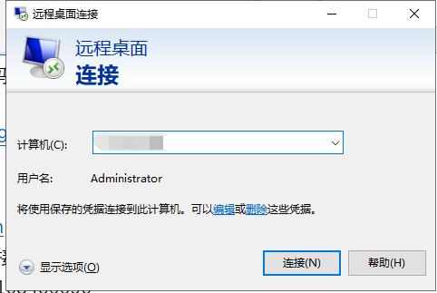 - 输入云服务器设置的密码，即可进入服务器
三.设置IIS
- 打开控制面板
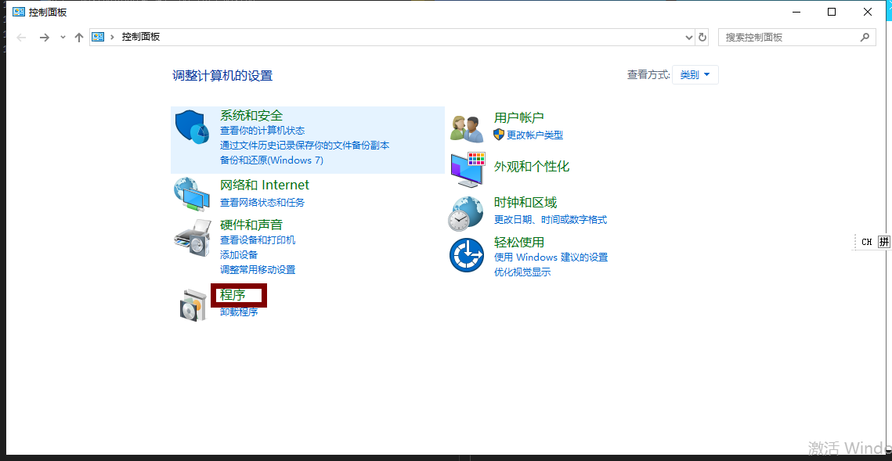 - 选择应用或关闭windows功能
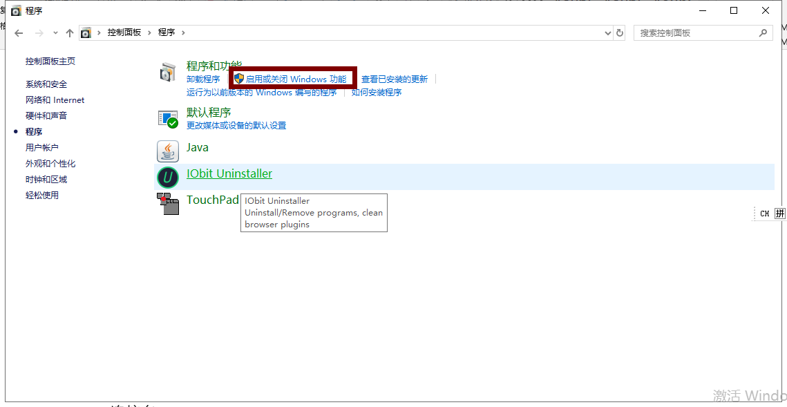 - 开启IIS共能（Internet Information Services）
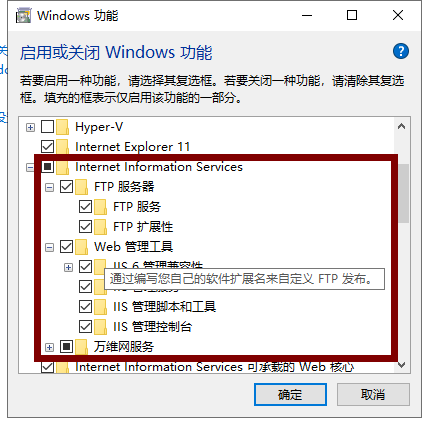 - 打开IIS
可在左下角搜索框直接搜索IIS，为了以后方便也可以直接在桌面设置快捷方式，或者固定至开始屏幕四.新建站点
- 将建好的文件夹上传至服务器（可直接复制，在服务器粘贴）
- 打开IIS，新建一个站点。右击“网站”标签，选择添加网站，按下图进行设置
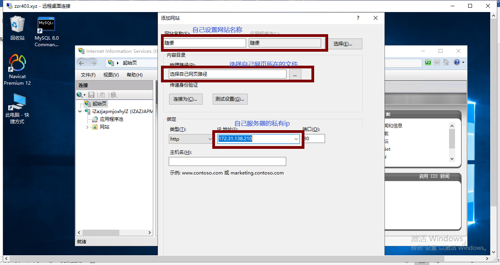 - 设置完毕后，点击浏览，即可在本地浏览器看自己做的网页
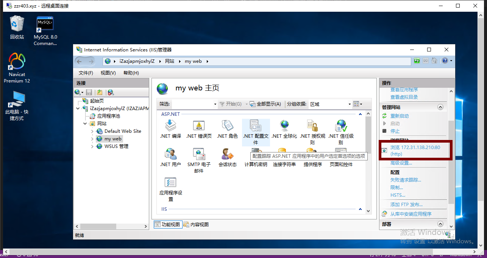五.设置防火墙
- 打开 控制面板——>系统和安全——>windows defender防火墙，然后点开左边高级设置。如图
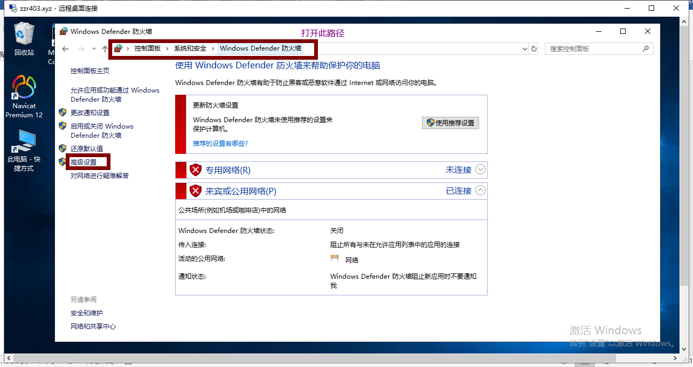 - 配置入站规则，点击左边入站规则
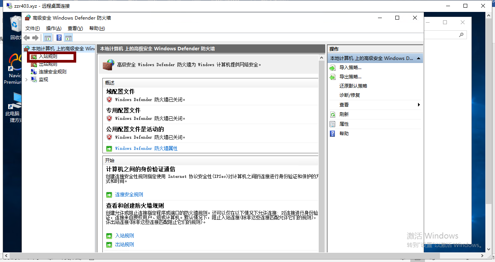 - 单击 新建规则，规则类型选择端口
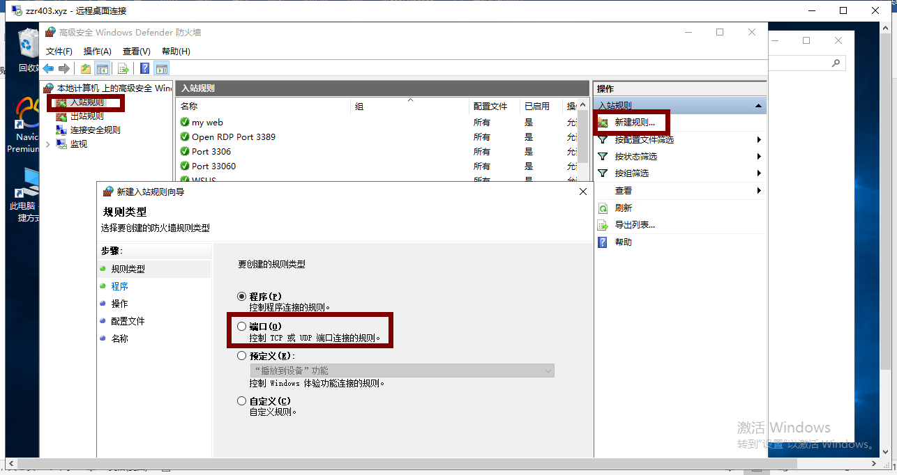 - 规则应用选择”TCP”,选择特定本地端口，端口输入80。继续点击下一步
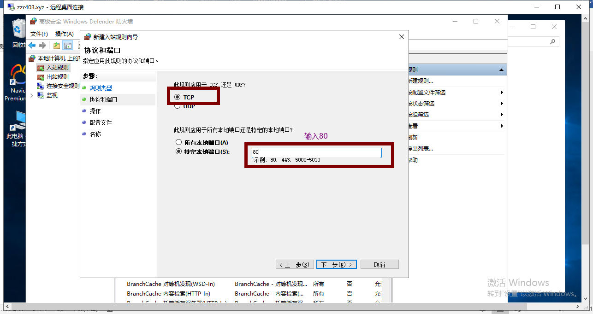 - 选择允许连接，点击下一步
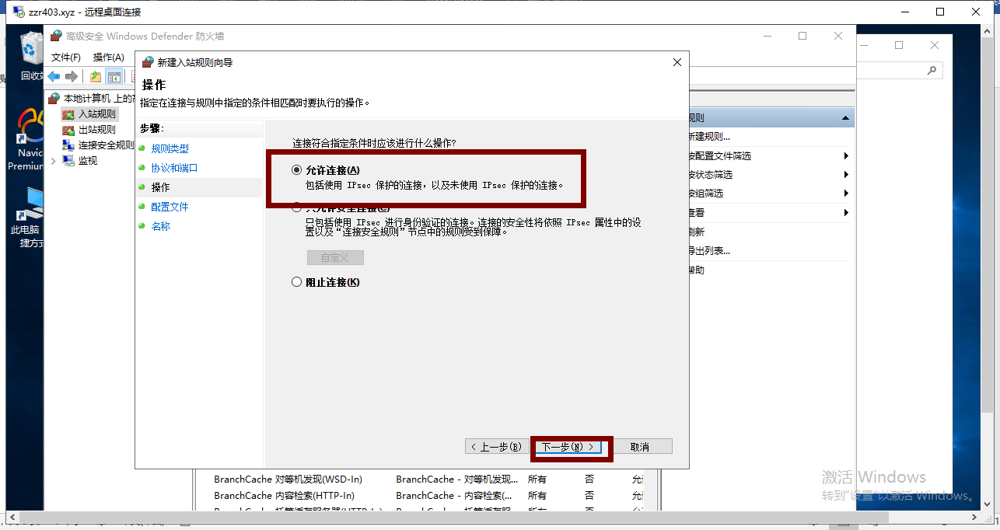 - 默认都选择，不需要修改，点击下一步
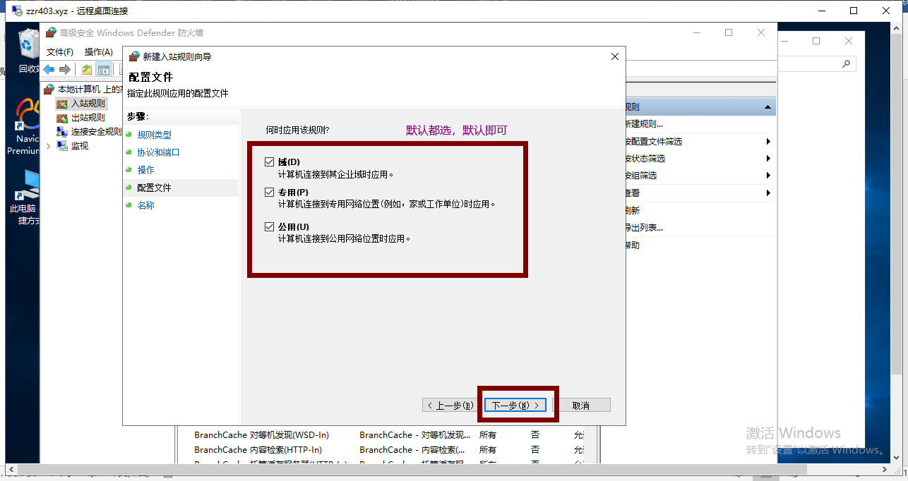 - 名称随便填一个，点击完成
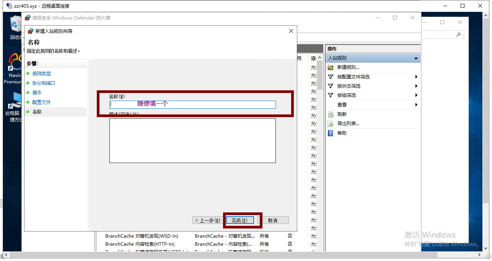六.设置安全组
- 打开自已的控制台
- 打开自己购买的服务器实例
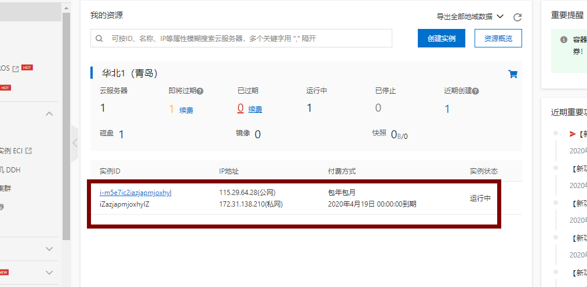 - 点击左侧本实例安全组
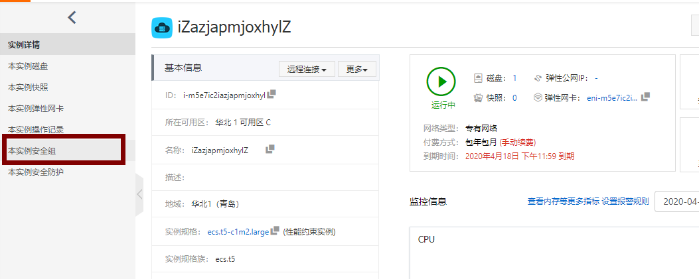 - 点击配置
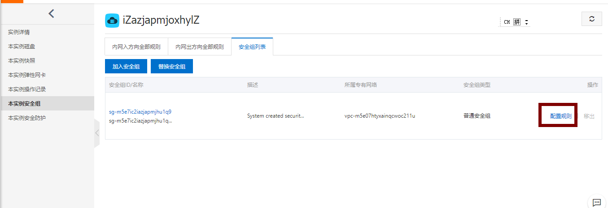 - 选择添加安全组规则
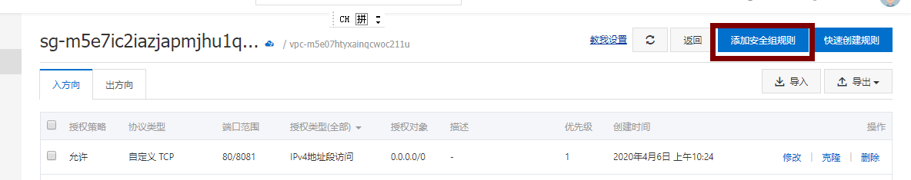 - 端口范围填入“80/8081” 授权对象填入0.0.0.0/0
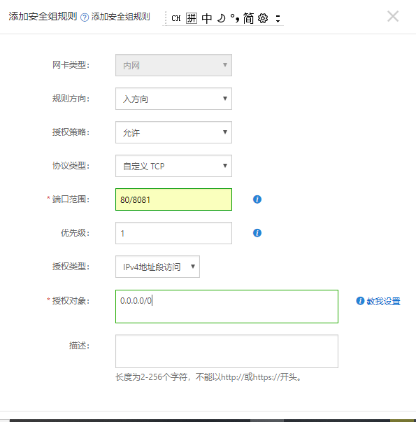六.在浏览器输入自己的服务器公网域名就可以使用了！！！